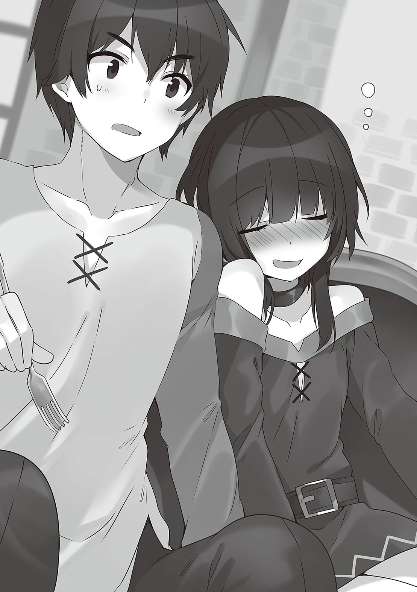

1
魔王军干部，邪神沃尔巴克。
在真正的力量被封印的状况下依旧能够驱使爆裂魔法折磨王都精兵的大悬赏犯。
消灭了以魔王军干部和邪神的身份被人恐惧的强敌后，我们总算是洗去了碰运气和捡死鱼的嫌疑，给世人留下了实力派队伍的印象。
然后，刚刚率领大量精锐冒险者战胜了魔王军，名头响当当的我——
「我想去抓野生的无头骑士」
「我听不太懂你在说什么」
正一如既往地躺在宅内客厅的沙发上。
全身放松地摊在沙发上的我对一脸困惑的惠惠说道。
「和真你这突然是怎么了？是突然开始信仰阿库西斯教想要去驱逐不死族了么？虽然那是非常可喜的事，但野生的无头骑士可不多见哦。首先还是用骷髅和幽灵将就一下吧」
我对说着蠢话的阿库娅说明了想要捕获野生无头骑士的理由。
「我寻找野生无头骑士是为了学会死之宣告这个技能。这是为了某个计划而必须的技能。不知道有没有能遭遇无头骑士的地方啊？」
「啊！？巫妖的吸血技能也好这个也好，为什么你总是想要去学那些肮脏的技能啊！把你的冒险者卡片拿来，我先让你在技能点数允许范围内把我的宴会表演技能学个遍！」
「喂蠢货住手，别随便乱碰！比起那种玩意，你倒是快点给我把回复魔法的技能交出来！」
我推搡着扑上来抢夺我冒险者卡片的阿库娅，这时，腿上趴着逗之助坐在沙发上的达克尼斯诧异地歪起了头。
上次回来之后，这坨厚脸皮的毛球就变得越发厌恶阿库娅，变成了一只一有机会就会去咬阿库娅的羽衣的，像点猫样的猫。
「你想要学习那么骇人的技能是怎么回事？话说，无头骑士可是仅次于吸血鬼和巫妖的最上级不死族啊？要是随便能遇到还要不要人活了」
我听到达克尼斯的回答，对于这意料之中的答案感到很是失望。
这可是个巫妖开店恶魔打工的世道，事到如今就算知道有无头骑士在鬼屋工作也不会怎么吃惊了。
不知是不是看到我的反应察觉到了什么，惠惠一脸不安地问道。
「到底是怎么了？和真会想要学习那么强力的技能，也就是说要面对相当强大的敌人对吧。没有什么我能帮忙的么？葬送了无数魔王军干部的爆裂魔法难道派不上什么用场么？」
为了消除她的担心，我向在身边对我说出如此可靠的话语的同伴露出了最棒的笑容说。
「不，没有那种事。谢谢你惠惠，爆裂魔法是能派上用场的。也对，不能奢求太多……好，惠惠，和我一起潜入邻国吧！然后给对方国家的王都来上一发之后，寄这样一封威胁信到王城。『若是不想再次遭到爆裂魔法的攻击，就立刻解除和爱丽丝公主的婚约。我等魔王军决不认同爱丽丝公主的婚约——』」
「你傻么！我就觉得自从受到爱丽丝殿下的信后你就变得很奇怪，原来是在想这种无聊的事么！难道说想要学习无头骑士的死之宣告也是因为打算诅咒爱丽丝殿下的婚约者么！？话说魔王军又是哪里冒出来的！」
听了我完美的计划，达克尼斯突然激动了起来。
「无聊是什么意思啊！没错啊，我就是要从远处对爱丽丝的未婚夫施诅咒，然后这样对他说。『哈哼，这看来是魔王干的好事啊。掳走公主是魔王的工作。你因为抢走了魔王重要的工作而招来了魔王的怨恨啊。我们这有个优秀的大祭司能够解除诅咒，但并不能确保你不会再次被诅咒。在打倒魔王之前，是不是还是先取消婚约为好……』」
「差劲，差劲透顶啊这个男人！竟然会想要为这种无可救药的事使用贵重的技能点数，真是不知羞耻！」
继达克尼斯之后，连惠惠也开始说起了这种话。
「你到了现在跟学会了料理技能和逃走技能的我说这些也没用啊。最近我还为了确认公会里的冒险者有没有偷偷说我的坏话而习得了『读唇术』这种技能」
「你，你这个家伙，真是在与冒险无关的方向越走越远了啊。不管怎么说，我都是不会让惠惠陪你去做那种傻事的」
为什么只把点数加到爆裂魔法和防御上的家伙有脸这样说我啊。
在唠叨别人之前，你们倒是先学点简单好用的技能。
……不过。唯有阿库娅意外地来了兴趣。
「我也不是不能参与你这个计划哦？最令我满意的是把坏事全都栽赃给魔王这一点。毕竟阿库西斯教团每天活动的一环就是散布魔王军的恶评」
「魔王袭击人类的理由，该不会就是你们这些阿库西斯教徒吧」
不过，我突然会说出这种事也是有理由的。
前几天，我收到了爱丽丝寄来的信。
那上面写着，她要头一次去和邻国的未婚夫见面，想请我做护卫。
身为义兄的我自然是不可能拒绝妹妹的请求的。
为了做好和诓骗可爱妹妹的野男人作战的准备，我最近磨起了以前一点都没有保养过的刀，还做了各种各样的准备——
「没办法，就还是采用正面突破的方式吧。接受护卫的委托后再进行各种妨碍。反正我技能点也多出来了，到时候就学点能用上的技能……」
这个时候我还没有注意到。
——达克尼斯在以不怀好意的目光看着抚着下巴自言自语的我。
2
第二天。
「——喂。这到底是怎么回事啊，给我个解释」
差不多快到下午的时候，我醒过来就发现自己不知为何被捆在了床上。
「你醒了么和真。不好意思，接下来我要囚禁你三天。不用担心，我会给你准备最高级的餐食，并且还会亲自照料你。你要是有什么想要的，无论什么我都会让我家下人买来」
不知何时侵入我房间的达克尼斯洋洋得意地在大白天说着胡话。
差不多是夏末秋至的季节。
我想她大概不是因为酷热而烧坏了脑子。
「你突然干什么蠢事。干嘛要把我捆起来？从你的性癖来看立场搞反了吧。难道是喜欢我喜欢到无法忍耐了么？」
「我怎么可能会喜欢上你这种花心的男人！还有，别说什么性癖，这个和我的兴趣没有关系」
达克尼斯俯视着被困在床上的我愤怒地说
「你还是一样麻烦啊。都进展到亲脸颊的地步了还说这种话？当今可不流行傲娇啊？」
「谁是傲娇啊！话说，现在和那个时候的事没关系的吧。你和我发展到了那样的氛围，却还到处拈花惹草……算了，现在不是说那些的时候。是关于爱丽丝殿下的事」
达克尼斯把我劈头盖脸训了一顿之后干咳一声——
「抱歉和真。关于前些日子爱丽丝殿下发来的护卫委托，我会寄信拒绝的。爱丽丝殿下似乎会在三天后前往邻国，所以在确认她出发之后我就会给你松绑。所以在此之前你都要安分点」
带着稍微有些抱歉的表情，说出这种话……
「你丫的别开玩笑了，你是这个意思么！要是放着不管的话我的妹妹可就要嫁给外面的野男人了！」
「你一个来路不明的平民野男人在说什么！要是想说自己不是不明正身的野男人的话，就先告诉我你的过去！……对了，很久以前就想问了。你到底是哪国出身，偶尔会展现出来的奇怪知识是怎么学来的，为什么会那么欠缺做人的常识等等等等……！」
我把达克尼斯那些麻烦的话当做耳旁风，被绑在床上大叫了起来。
「惠惠，阿库娅！救救我，我一大早被痴女监禁起来玩弄了！」
「喂，喂，别说些奇怪的话！而且很遗憾，那两个人已经出门了。之后就只差叫我家的人来把你连床一起搬运到我家里去了。要是让你去当护卫，那毫无疑问是会惹出外交问题的。这也是为了我们的国家，你就忍忍吧」
「我当护卫能惹出什么外交问题！在王城生活的时候贵族的礼仪我也学会了，我不会做什么无礼之事的你快把我放开！」
「简直就是『无礼』二字的诠释的你还有脸说！要是你老老实实呆着的话我会给你吃很多无法简单弄到的美味。而且你看，你骨子里就是家里蹲对吧？你只用躺着身边就有人照顾你，这么想还是不坏的对吧？」
面对弯下身子看着我像是安抚小孩子一样地这么说的达克尼斯，我忽然注意到现在不是说这些的时候。
「……说得也是。好我知道了」
「你，你理解了么……！最近一直都很忙乱啊。偶尔像这样，和你悠闲地渡过也还不错……」
达克尼斯带着腼腆的笑容这么说道。
「那么，我从刚才开始就非常想上厕所，你赶快想想办法」
于是我保持着被绑在床上的状态干脆地说道。
「……啊？」
「啊什么啊，你不是才说了么？说要亲自照料我。那自然也包括照顾『下面』吧」
「…………啊？」
我对僵住了的达克尼斯说。
「于是我现在就命令你，达克尼斯，拿尿壶来」
「啊啊啊啊！？」
「啊什么啊啊，赶快。这个大小姐真是不中用。这不是你自己说的么。赶快，麻利点」
这不是性骚扰。
我动弹不得，所以没办法。
没错，这是无奈之举。
「不不，不是！不是，不是那样！不，和真，我虽然确实说了要亲自照料你但不是那个意思，等一下！」
「等不了啊，起床肯定是憋着尿的。这难道不是自然现象么。话说在前，这可是你每天都要干的事情哦？我可不想让你家那些认都不认识的佣人来做这事。还不赶快点」
「呜呜呜……但。但是……」
刚才为止的强气不知去了哪里，达克尼斯慌了起来。
「啊，有点不妙，真的要出事了。你要害羞到几时啊，这之间我不是也帮你上过厕所么？又是帮你脱内裤又是帮你拿纸的。都已经相处那么久了，到了现在这点事还羞个什么啊。光是下半身也好快点给我松绑」
达克尼斯小声对被尿意紧逼着的我说道。
「……解不开」
「……啊？」
面对我下意识的反问，达克尼斯一脸惭愧地低下了头。
「没有想过还有下面的问题。怎，怎么办，用来拘束你的是相当强力的魔道具，没办法中途解除拘束。也就是说接下来三天你都要这样……」
「你个蠢货！要怎么办啊，我这三天都要尿裤裆了吗！喂你别跟我开玩笑啊，要是事情变成那样，之后你也免不了同样的下场！」
受到斥责的达克尼斯红着脸忸怩起来。
「同，同样的下场……」
「在这种紧急情况下你别给我期待那个啊！啊，可恶！」
我抬起唯一能动的头重新确认起现在的状况。
我像是中了束缚魔法一样，被橡胶一样材质的绳子从肩膀绑到了膝盖。
一眼看起来是能够轻松切断的，但既然她说那是强力的魔道具，那恐怕就切不断了吧。
但似乎能够弄松绳子。
「喂达克尼斯，以你的力量在绳子之间拉开缝隙是没问题的吧。把捆住我下半身的绳子扯开个洞，我就那样解决就好了」
「我，我知道了，包在我身上！」
达克尼斯红着脸开始拉绳子。
绳子虽然紧紧绑在我身上，但达克尼斯还是好不容易做出了大到能够把那个拿出来的缝隙。
「好，干得不错。那么，帮我把那边的瓶子拿过来」
「……为什么这里会有这种东西？这种东西，到底是为什么……」
「这是家里蹲的高雅嗜好。总有冬天很冷不想下床或者早上嫌麻烦不想去上厕所的时候吧。这就很重要了」
「你，你这家伙到底是有多……算了，现在是多亏了有这个。来，我放这了」
达克尼斯一脸无语地这么说着把尿瓶放到了我腰旁边……
「喂，这样子撒得了个毛啊，你帮我把内裤拉下来我才好解决问题啊」
「啊啊！？」
这家伙，是想让这种状态的我做什么啊。
「啊什么啊，我可是两手被捆到动弹不得了。说到底，这样的状况不是你造成的么，我已经忍不住了，你赶快啊！」
「就就，就算你那么说！啊啊真是的……」
达克尼斯把手伸了过来，她随时都可能泪流满面。
达克尼斯把裤子脱到一半，露出了不可思议的神情。
「……嗯？喂和真，裤子被挂住了拉不下来来着。这是……」
「抱歉，是早晨的生理现象」
……
「哇，哇啊啊啊啊啊啊啊啊啊啊啊啊啊啊！」
「好痛痛痛痛痛痛痛你干嘛快住手！住——！要断了！」
虽然说不出是什么要断了，但我连在那之前还在愉快地性骚扰达克尼斯这件事都忘了，只顾着惨叫。
「你在想什么啊，我差点就在性别上转职了啊！说真的你给我记好了，松绑后我绝对要让你哭出来！」
「我已经哭出来了……我说和真，要不就放弃了吧？你看，等阿库娅回来让她用水之召唤和净化帮你弄干净就……」
「你是让我撒么！你是让我放弃了一切，就这么撒出来么！别说蠢话了快动手！就是因为你移开了视线才不行的，这是你自己种下的苦果，你给我负起责任来看好，快点！」
这次定睛看向了我的下半身的达克尼斯再次把手伸向了裤子。
「呜，怎么会这样……！明明我只是，明明我只是想把你隔离开来以此保护爱丽丝殿下而已……但，但是，身为贵族大小姐的我被强逼照顾下面，还被命令要好好看……好像也不错……」
「喂，别说蠢话了快动手，没时间了！不行了，要忍不住了！」
「等，等等和真，我现在就帮你处理！要一了百了还太早！啊啊真是的，这种时候要是被阿库娅或者惠惠看到的话……！」
正当达克尼斯说道这里。
忽然感觉到门口有视线看向那边，便发现阿库娅一脸『保姆看见了不可描述的画面』的表情看着我们颤抖着。
「啊哇哇哇哇……达克尼斯跟和真居然在不知什么时候变成变成了这么见不得人的关系……我去跟工会的各位散布一下就回来！」
「「等等！」」
「——呼。真是得救了阿库娅，我差点就因为这个痴女而尿床了」
让阿库娅用魔法解除了魔道具的拘束后，我一身清爽之后回到了房间，达克尼斯一脸快要哭出来的表情自言自语着。
「呜呜……我，我不是痴女……」
「达克尼斯痴得也不是一两天了倒是无所谓，不过这到底是什么玩法？」
「阿，阿库娅！？」
我没管不知为何受到了冲击的达克尼斯，向阿库娅说明了事情经过。
「这之前爱丽丝不是寄了信来委托我做护卫么？然后，不知为什么达克尼斯反对我接受委托。她似乎是打算把我拘束起来监禁在她家，然后在对我上下其手的同时推掉委托」
「达克尼斯你真是的，这样做的话被说成是痴女也是活该啊？」
「谁会上下其手啊！……但是，这次真的是很不妙。婚约对象是邻国艾洛德的第一王子。这位王子似乎相当难伺候，所以要是你们按照平时的调调做出一点无礼的举动，大概立刻就会发展成外交问题」
难伺候的第一王子。
知道了这种事，就更得保护好爱丽丝了。
听到这里，阿库娅的眼中放出了光。
「艾洛德？你刚才说了艾洛德？我们是要去那个赌博业大国艾洛德？」
虽然不是很懂，但那个国家的名字似乎是触碰到了阿库娅的心弦。
赌场大国听起来可真是个不错的绰号。
达克尼斯看着空前来劲的阿库娅表情僵硬起来，
「阿库娅，话说在前，这是护卫的委托可不是叫你去玩啊？对了，要是你那么想去艾洛德的赌场的话就下次大家一起去旅行吧！我们钱很够，不用为了工作，单纯去玩也没问题的！」
虽然达克尼斯拼命劝说，但一看阿库娅的表情就知道她是去定了。
我满足地点了点头——
「好，看来阿库娅似乎也是赞成接受这次委托的！那就等惠惠回来之后表决吧。话虽如此，但我们最近也没有怎么出过任务，所以我也不认为她会拒绝出远门！」
「呜呜呜呜呜……」
我看着抱起头来的达克尼斯，露出了饱含确信的微笑。
3
「不要」
当天傍晚。
不知是不是刚刚放完每天必修课的爆裂魔法，被悠悠背回来的惠惠有气无力地这么说道。
讨伐沃尔巴克回来之后，这家伙就不知为何非常叛逆。
就连平时都硬要我陪的爆裂散步，最近也都一直是悠悠陪着去的。
「为什么不啊，你又是怎么了？明明平时都会说『要打倒见所未见的强敌』什么的第一个答应的」
瘫在客厅沙发上的惠惠稍微看了一下阿库娅和达克尼斯在准备晚饭的厨房后，瞥向我说。
「没有为什么啊。这个男人真是的，明明平时任敲任打都不肯工作，为什么一跟爱丽丝扯上关系却就会干脆地接受啊」
我像挑衅般地对说出空前正经的话的惠惠说道。
「哦，怎么，你吃醋了？」
但惠惠却没有像平时那样火冒三丈，而是直勾勾地看向了我。
「是啊，就是吃醋了。都发生了那种事，是不是也该稍微在意一下我？」
「哦……啊，是的」
惠惠一点捉弄我的意思都没有，直白地这么说。我反而困惑地红起了脸。
所谓那种事，是指那天晚上差点跨过一线的事吧。
话说这家伙是会说这种话的人么？
该说是放开了还是看开了，有种不再客气了的感觉。
「和真你就那么挂记爱丽丝么？」
我对那么说着笔直地看着我的惠惠说。
「不，那啥，那孩子让人挺放心不下的。与其说因为是异性，不如说是因为自己身处高位而太在意别人的看法，不能说什么任性话，看着显得很寂寞。这样的妹妹让我很挂心啊」
我虽然是家里蹲但不是萝莉控。
我只是把爱丽丝当作可爱的妹妹来看待。
虽然要是她长大后说要当哥哥的新娘的话，我也不介意去满足她的愿望。
面对惠惠意料之外的态度加快了语速的我一边担心着自己的脸有没有红一边接着说。
「不过那啥，要是惠惠不愿意的话那就想点别的办法吧。毕竟要做护卫的话还是想大家一起去。虽然见不到爱丽丝很遗憾就是了……」
「接受吧」
说到这里，惠惠打断了我的话，轻轻叹了口气。
「我也很在意那孩子。刚才我只是稍微吃了点醋而已」
「哦，哦」
怎么回事，这种不加掩饰的好意。
耳根子周围非常烫。
正在我纠结要不要对被年下的小女生玩弄于鼓掌之间变得通红的脸施加冰冻魔法的时候，达克尼斯和阿库娅从厨房把食物端了出来。
「惠惠，回来了么。今晚可是大餐！……怎么了和真，脸很红啊？」
「什什，什么都没有啊！对吧惠惠！」
和被指出脸红动摇起来的我不同，惠惠一脸平淡地对达克尼斯回以了微笑。
为什么这么落落大方啊这家伙，这样不是显得坐立不安的我很傻么。
「惠惠你真是的，要是早点回来就能看到有趣的场景了。我回来的时候达克尼斯把和真绑在床上正准备上下其手」
「嚯」
惠惠猛地对阿库娅多余的一句话起了反应。
「等等阿库娅，我可没有打算上下其手！虽然把他绑起来了是事实，但就跟刚才解释的一样……」
端着盘子的达克尼斯瞥着惠惠慌忙解释起来，
「哎呀，要是阿库娅再晚一点回来，我就要被达克尼斯把裤子脱下来了。真是得救了」
「什！？」
听到我补充的这句话，惠惠的双眼放出了红光。
「……虽然常年发情的达克尼斯对谁做什么都跟我没关系，但好歹也是大家闺秀，硬上男人这种事可不太值得赞同啊！」
「不不不不，不是……！不是那样的惠惠，这是有理由的！还有，不要说我常年发情！」
虽然达克尼斯慌慌张张地解释起来，但我们的视线已经钉在了桌子上的料理上。
「哎呀，和真你在意这个么？真是不枉和我进行过美食巡礼，眼光真不错。没错，今天的晚饭是河豚！而且还是被称作河豚之王的极乐河豚。虽然比起其他河豚来毒素要强上一个档次，但这可是被美食家们赞为『如果能上吃这个死了也无所谓』的绝品！现在正好是它最好吃的时节！」
「真不知道这河豚的名字是指味道还是吃了之后的事。不过你居然有河豚料理执照啊。虽然之前就觉得你很多才，这可是比想象中还能干啊」
我和惠惠急忙坐上桌子，面对铺开在眼前的料理两眼发出了光芒。
河豚刺身，河豚汤锅，茶碗蒸。
装着类似鱼籽的东西的小盘，还有盛在土灶上的河豚鳍。
面对这些光看着都流口水的料理，我等不及伸出手去……
「我哪来的那种执照。感觉身体麻痹了就说，我给你们施解毒魔法」
「喂」
就因为这个世界太不拘小节了我才讨厌的。
我把拿起来的茶碗蒸放回去后，边听到旁边传来了哧溜一声。
「好吃好吃」
「别吃啊，那玩意没去毒的啊！？」
同样拿着茶碗蒸的惠惠享受地吃着。
不仅如此，不知何时坐到我对面的达克尼斯也用叉子叉起河豚刺身送进了嘴里。
真的么，这些家伙都犹豫一下的么。
这个世界的居民都是用解毒魔法吃河豚的么。
因为是有魔法的世界，所以说合理倒也合理就是了……
暴露在我视线中的达克尼斯像是报复我刚才捉弄她一样对我坏笑着说。
「怎么了和真，身为冒险者却害怕河豚的毒么？有唯独司祭技术还算一流的阿库娅在，有什么好怕的」
「我说达克尼斯，你刚才说『唯独司祭技术还算一流』？」
「没说」
达克尼斯一边这么说一边吃起了别的料理。
旁边的惠惠舀起河豚汤锅中的汤幸福地喝着。
…………河豚么。
说起来，我在日本的时候也没吃过河豚啊。
「也是啊，暂且不说你其他方面，但唯有恢复魔法是一流的啊。好！」
「我说和真，你刚才说『暂且不说你其他方面』之类的？」
「没说……好吃！什么啊这是，超好吃！」
我立刻吃起河豚汤锅，并对这人间美味发出了赞叹。
文化知识水平低下的我就只能用超美味这种语言来表现。
看着那样的我们，阿库娅露出了满足的微笑。
「大家看起来都很高兴真是太好了。那些河豚本来是塞西莉为了招募到新的信者而准备的。她制定了用河豚的魅力引诱路人，在他们吃了之后以解毒魔法为条件逼迫他们改信的强大作战计划。但她不知为何被警察带走了」
「你们还企图做那种事啊。不都说了不要再跟那个女人扯上关系了么」
不过，拜她所赐我们才能吃上这么极品的河豚，所以还是得感谢她。
我开始吃切成薄片的河豚刺身时，阿库娅已经用土灶靠好鱼鳍，做出鱼鳍酒喝了起来。
就着河豚鱼子喝鱼鳍酒的阿库娅已经不再是女神也不是女主角，只是个中年大叔。
「说起来，河豚的内脏不是毒素特别强么？可别得意忘形吃太多了啊。要是能用魔法的你在关键时刻身体麻痹动不了的话可就没有意义了啊？」
「真蠢，我身上穿的可是神器啊？这可是能够无效有害异常状态的强大装备。河豚的毒怎么可能对我有效？」
说起来以前好像听说过来着。
本来还担心这家伙肯定会有纰漏，但这样的话……！
——不知享受了多少河豚料理后。
「呵呵呵，肿么样河镇，盗了我仄种水平，薱于毒的忼悻也是相当……」
「这家伙舌头麻得话都说不清楚了」
看着猛吃剧毒部位的达克尼斯口齿不清，正在想差不多该让阿库娅施加解毒魔法了。
这是忽然有什么倒向了我。
一看发现满脸通红的惠惠在众人面前像是对我撒娇似的把头靠在了我的肩上……
「喂阿库娅！这加货枣糕了……我也说部卿话了……」
我看向阿库娅，瞬间面色铁青。
阿库娅趴倒在了桌上。
这家伙的神器什么的是怎么了，说好可以无视毒素的呢！？
注意到事态的达克尼斯慌忙支撑起了阿库娅……！
「呼……」
「折价或，哲麽块就醉滩了！起来！给窝齐来！」

4
第二天早上。
「我说和真，真的要接受爱丽丝殿下的委托么？我把话说明白了。就算没有你们那种无礼的态度，我也觉得以我们的实力最终会让护卫委托失败。差点被河豚团灭的队伍除了我们估计也就没谁了吧？」
「昨天的事不算是冒险中的失败所以是无关的。我们可是在这个世界打倒最多魔王军干部的，阿克塞尔第一的队伍。没人能对我们说三道四」
昨晚险些因为食物中毒而团灭的我们做好了前往王都的准备，来到了阿克赛尔城的传送店。
在那之后飞奔去了厄里斯教会才好不容易得以平安无事，以后河豚料理还是算了。
「去寄放泽尔帝和逗之助的阿库娅好慢啊。是出什么事了么？」
我们现在正在等去维斯店里寄放宠物们的阿库娅。
那家伙该不会是又和巴尼尔吵架了吧。
正当我想着这些事的时候背着行李的阿库娅便来了。
「它们我已经寄放好了。邪恶假面一看到逗之助就说出了『嚯嚯，这可真是，一个不留神就又发生有趣的事啦！呼哈哈哈哈哈哈哈！』这种莫名其妙的话并钻起了它的脑袋，不过大概没问题吧」
有趣的事是指什么啊。
果然长大后会变成那个大姐姐么。
虽然也非常在意那边的情况，但现在正事要紧。
「喂，你们，这里的传送店由我来交涉吧。我很早以前就想对这家店发点牢骚了」
「发牢骚？你和这家店的店主有什么过节么？」
达克尼斯有些诧异地问道，但在我回答之前传送店的门就打开了。
我想起了几个月前发生的事。
那是我和妹妹爱丽丝被强行拆散，想要偷偷去见她的时候。
「哟大叔，我又来了！麻烦传送到王都」
「欢迎光……你不是通缉中的佐藤和真么！你怎么不长记性啊，不都说了你不被许可传送到王都吗？」
达克尼斯听到我们的对话感到无语。
「我，我一不留神，你就钻着空子企图去见爱丽丝殿下么」
「是啊。虽然不知是不是因为那个叫库雷亚的贵族从中作梗，我没办法再传送去王都了。但是这次不一样。你看大叔，看看这个！这是皇家送来的请帖，这可是正式的请帖，可别弄脏了！」
见我这么说着晒出爱丽丝寄来的信，传送店的店主露出了一脸嫌烦的表情。
「那是真货么？该不会是在哪里伪造的吧？毕竟之前还来说过『反抗身为达斯提尼斯家关系者的我可没有好果子吃』什么的来威胁我」
「喂和真，你给我过来。我有话跟你讲」
「我拒绝。喂大叔，这里这位就是达斯提尼斯家的大小姐。你看，你在这个城市的话应该对她还是有印象的吧？我没跟你说谎对吧」
我一边遭到被我拉着手的达克尼斯的抵抗一边这么问，店主的脸色便渐渐发青了。
达克尼斯看到店主的反应后，拼命把我拽向了店的角落。
「你还拒绝！我说和真，你没有在别的地方用我的名字干些奇怪的事吧？没有用我家的权利犯什么事吧？」
「也就只有在和阿库娅去高级餐厅因为衣冠不整被赶出来的时候」
「我就只有在做土木工程的大叔们都不肯接重建阿库西斯教团的教会的活儿时，说过找阿库西斯教团麻烦的话我就要去找达克尼斯告状而已」
「我就只有在商店街买晚饭菜品的时候说这是拉拉提娜大小姐要品尝的东西所以请给我最好的部分而已」
达克尼斯听了我们的话无力地瘫了下去。
她双手捂面，不只是在忍住不哭还是在遮羞。
看着达克尼斯觉得看不过去的店主像是在关心她一样开口道。
「从那样的反应就能看出您是达斯特尼斯家的人了。那个，是皇家的委托的话，就不用付费了……」
「哦，麻烦你了」
「我会付的！费用会好好付的，不能再给庶民添麻烦了！」
达克尼斯打断理所当然般地打算接受的我，跳起身来拿出了钱包。
「喂和真，这次的委托结束后有很多事要问你你给我记住了。在那边装作与事无关的阿库娅和惠惠也一样！」
我们三人围住一边向店主支付费用一边自言自语着的达克尼斯，把她推进了魔法阵里。
「真是个顽固的大小姐啊。我们是队伍同伴也是家人不是么？不就该大家互帮互助么。就算你是贵族我也不会改变对你的态度也不会在意你的身份。这就是所谓的同伴啊。你在困难的时候也可以随便使用身为阿克塞尔第一冒险者的我的名字」
「没错达克尼斯，你想要借助阿库西斯教团的威严的时候随时跟我说，我会帮你的」
「虽然达克尼斯最开始说自己是贵族的时候吓了一跳，但现在对我来说达克尼斯就是达克尼斯。想要借助红魔族的力量的时候只管跟我说。给乡里的大家写封信我还是做得到的」
听了我们的话，达克尼斯一瞬间露出了害羞的笑容。
「你，你们……！……嗯？不，等等，果然还是很奇怪！我怎么都不觉得我会有需要借用你们的名字或者是需要借助阿库西斯教团还有红魔族力量的时候……！」
达克尼斯嚷嚷着一些听不太懂的话的时候，我们站到了魔法阵里待机。
这时候。
「我说和真，你知道么？据说用魔法传送的时候，会有很小几率发生事故的！据说会和不小心飞进魔法阵的其他动物融合在一起之类的！据说狼人和蛇妖就是这样产生的！据说是！」
阿库娅突然像是想要吓我一样这么说道……
「那下次就抓个两三只哥布林和你一起传送好了。要是混合的不错，你的智力大概会稍微上升一点」
「你说什么臭家里蹲，你才是需要和工蚁一起传送，治好那烂泥扶不上墙的体质！」
「那，那个……请不要在魔法阵上乱动，可能真的会发生事故……」
店主一脸困扰而又战战兢兢地这么说着时，我发出了出发的信号。
「好。大叔，送我们去王都！」
至今为止我接受的大件委托全都是被卷入或是顺势接下的。
但是，这次不同。
是为了贯彻『不能把自己的宝贝妹妹交给脸都没见过的王子』这自我意志。
「等等……！」
店主也不理会似乎还想发什么牢骚的达克尼斯，对我们咏唱出了魔法。
「<转移（Telport）>！」